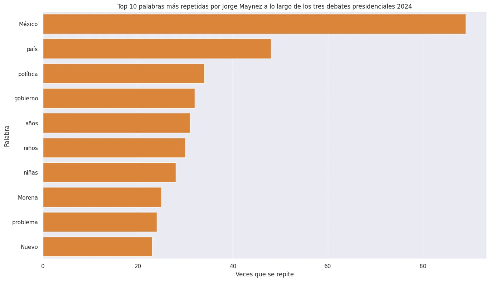
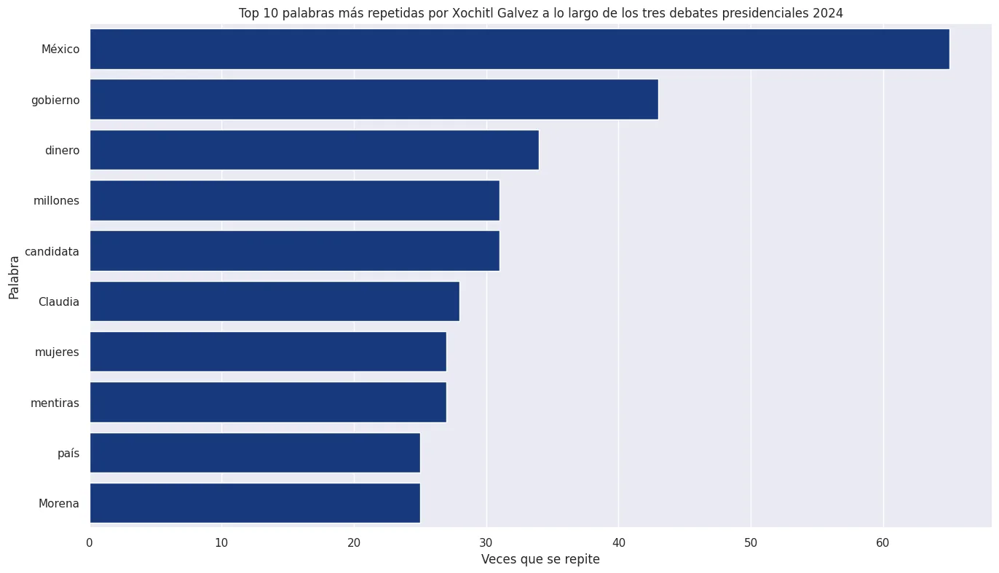
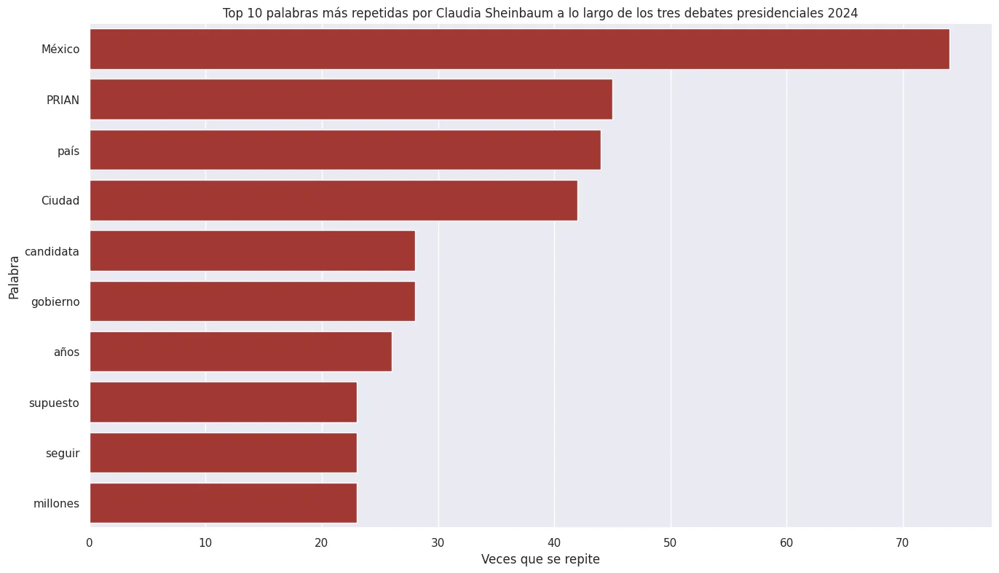

Proyecto · Procesamiento de lenguaje natural
¿De qué hablaron en los debates presidenciales 2024?
Tres debates, horas de discursos y muchísimas palabras. Me propuse responder una pregunta sencilla: ¿cuáles son las palabras que más repitió cada candidatura? Para lograrlo obtuve las transcripciones directamente de la página del INE y las analicé con Python.
- Python
- requests
- Regex
- NLTK
- pandas
- seaborn
- debates analizados
- 3
- candidaturas
- 3
- resultado
- Top 10 palabras
1. Obtención del texto del debate
El INE publica la versión estenográfica de cada debate. Descargué las tres páginas con la biblioteca requests y después usé expresiones regulares para quedarme solo con los párrafos del texto:
res_1 = requests.get(url_1) # Hacemos la solicitud a la página
html_1 = res_1.text # Convertimos el resultado a texto
patron = r'<p>(.*?)</p>' # Extraemos solo los párrafosEl reto fue separar lo que dijo cada persona. Cada intervención inicia con el nombre de la candidatura en negritas, así que armé una expresión regular para cada una y limpié todo el "residuo" del HTML ( , etiquetas, signos de puntuación…). Al final uní las intervenciones de los tres debates.
2. Procesamiento con NLTK
Con el texto limpio entra NLTK, un módulo de procesamiento del lenguaje natural. El proceso fue:
- Tokenizar: separar el texto en palabras.
- Quitar las palabras comunes (stop words) como "el", "de" o "que", que no aportan información. Además agregué algunas propias de los discursos como "vamos", "tema" o "hacer".
- Contar la frecuencia de cada palabra y quedarme con el top 10.
tokens = word_tokenize(texto_candidato)
tokens = [palabra for palabra in tokens if palabra.lower() not in pc]
frecuencia = FreqDist(tokens)
frecuencia.most_common(10) # Top 10 de palabras más repetidas3. ¿Qué palabras repitieron más?
Para visualizar los resultados usé pandas y seaborn, con un gráfico de barras para cada candidatura en el color de su partido o coalición.



Algo curioso: "México" fue la palabra más repetida por las tres candidaturas, y "país" y "gobierno" también aparecen en los tres top 10. A partir de ahí cada discurso toma su propio rumbo, incluyendo menciones a sus contrincantes y a otros partidos.
¿Qué aprendí?
Este proyecto me permitió ir desde obtener los datos directamente de una página web hasta procesar lenguaje natural. Aprendí que la mayor parte del trabajo está en limpiar el texto: sin una buena limpieza, el análisis simplemente no funciona.
Contar palabras es solo el comienzo. Un siguiente paso sería analizar frases completas o el sentimiento de cada intervención para entender no solo qué se dijo, sino cómo se dijo.